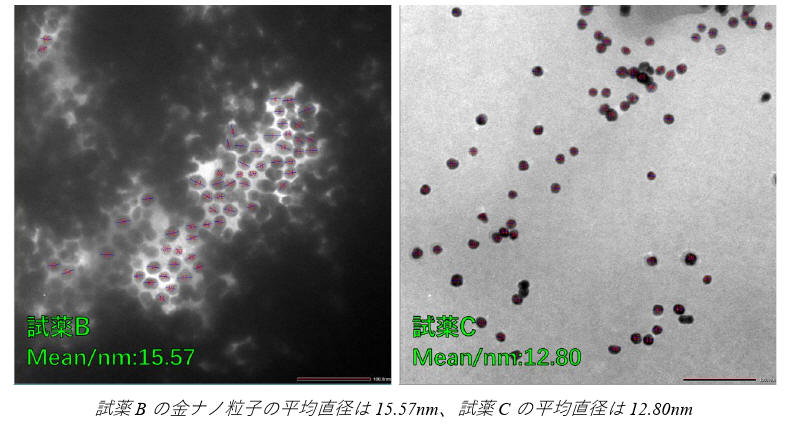
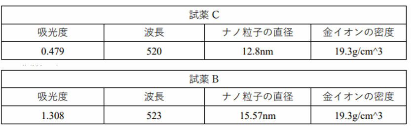

Synthetic gold nanoparticle experiments
The
original language of this article is Chinese and parts of it have been
translated using DeepL
Today I did an experiment to
synthesise gold nanoparticles, using the citric acid reduction method. I
measured the absorption spectra of gold nanoparticles using a UV-Vis
spectrophotometer to see how their size and shape relate to each other. I also
used aqua regia to treat heavy metal waste solutions and learnt how to handle
hazardous substances safely.
There are three
issues I want to examine:
1) The reason why a change in the
concentration of sodium citrate leads to a difference in the size of the gold
nanoparticles.
2) The chemical equation for the reaction.
3) The relationship between concentration and rate of reaction.
I first prepared the apparatus needed for the experiment, then prepared
different concentrations of gold salt solution and sodium citrate solution. I
heated the gold salt solution to boiling and then quickly added the sodium
citrate solution. I observed that the colour of the solution changed from
colourless to purple, which indicated that gold nanoparticles had formed. I
continued heating for 15 minutes, then cooled the solutions and measured their
absorption spectra using a UV-Vis spectrophotometer. I also treated the waste
solution with aqua regia to convert the gold ions into soluble chloroauric acid.
I prepared 12 different
concentrations of gold nanoparticle solutions, labelled with A to L
respectively. Due to time, I did not measure the absorption spectra of the J, K
and L solutions. I calculated the molar concentrations of gold salt and sodium
citrate in each solution based on molecular weight and volume and the results
are shown in the table below.
I found that all the solutions
except A had a distinct purple colour, indicating that the gold nanoparticles
were successfully synthesised. I used the reaction time to indicate the rate of
reaction, which is the time it takes to go from colourless to purple. I measured
the reaction times from the recorded video and the results are shown in the
table below.

I also measured the absorption
spectra of the various solutions using a UV-Vis spectrophotometer to see at what
wavelength their absorption peaks were. I found that the solutions A, D and G
did not form a stable dispersion system so no valid spectra were obtained. the
absorption spectra of the solutions B, E and H and the solutions C, F and I are
shown below.

I also found that solution A
turned colourless again when heated and a grey precipitate appeared. I repeated
the experiment twice and the results were the same. As you can see below, there
is a clear difference between solution A and solution B. Solution A is almost
colourless with a grey precipitate. solution B and the other solutions are
purple in colour.

I used a TDM microscope to
observe the shape and size of the gold nanoparticles in both solutions B and C
and measured their average diameter. The results are shown below, the average
diameter of the gold nanoparticles in solution B was 15.57nm and the average
diameter in solution C was 12.80nm.

I calculated the absorption coefficients of the gold nanoparticles based on
their size and absorbance. The results are shown in the table below.

I also answered
the following questions:
1) Why does the solution
change colour in this way?
This colour change in the
solution is due to the surface plasmon resonance (SPR) phenomenon of gold
nanoparticles. The surface electrons of gold nanoparticles are excited by
incident light, resulting in resonant oscillations that absorb certain
wavelengths of light and reflect others, resulting in different colours. The
size, shape, dispersion and media environment of gold nanoparticles all affect
their SPR properties, resulting in colour variations.
2) Why can't solution A be
dispersed?
A solution cannot be dispersed
because the concentration of both gold salt and sodium citrate is too high,
resulting in an insufficient amount of solvent, and the concentration of ions in
the solution is too high, producing a strong electrostatic repulsive force,
making the gold nanoparticles cannot be stably dispersed in the solution, but
gathered into precipitates. This electrostatic repulsion force is a kind of van
der Waals force (van der Waals force), is due to the transient dipole moment
interaction between non-polar molecules and generated.
3) Why does the higher the concentration of gold salt, the larger the size of
the gold nanoparticles?
The higher the concentration of gold salt, the larger the size of the gold
nanoparticles, because the concentration of gold salt determines the speed of
the reduction reaction of gold ions. The higher the concentration of the gold
salt, the faster the reduction reaction and the greater the number of gold atoms
produced, but the number of gold nanoparticles dispersed in solution remains the
same, so each gold nanoparticle will adsorb more gold atoms, thus increasing
their size. In addition, pH also affects the size of the gold nanoparticles, as
pH affects the adsorption and arrangement of the sodium citrate molecules on the
surface of the gold nanoparticles, which in turn affects the morphology and size
of the gold nanoparticles.
I have drawn on
the following literature:
高木 誠 『ベーシック分析化学』
日本化学会 『現代界面コロイド化学の基礎』
ウィキペディア（2023
年
4 月
20 日
(木)
10:20 UTC の版）
|